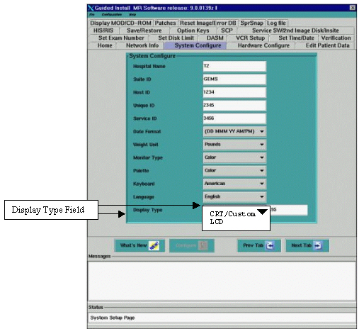

Look for the “Display Type” field.
Illustration 1: INSTALL GUI “SYSTEM CONFIGURE” TAB- DISPLAY TYPE FIELD

The “Display Type” Field has two choices:
LCD – This should be used to set Gamma for a specific LCD listed in the dropdown box. (Preferred method)
CRT/Custom – This should be used to set a Custom LCD or CRT Gamma setting.
| NOTE: | It may be necessary to “Toggle” between the “CRT/Custom” and “LCD” options in the Display Type Field to select “LCD”. |